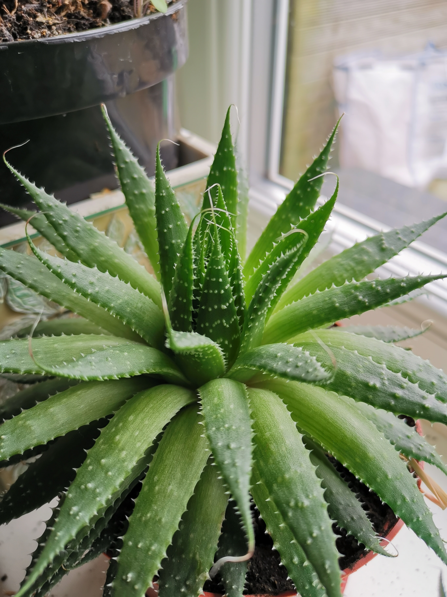
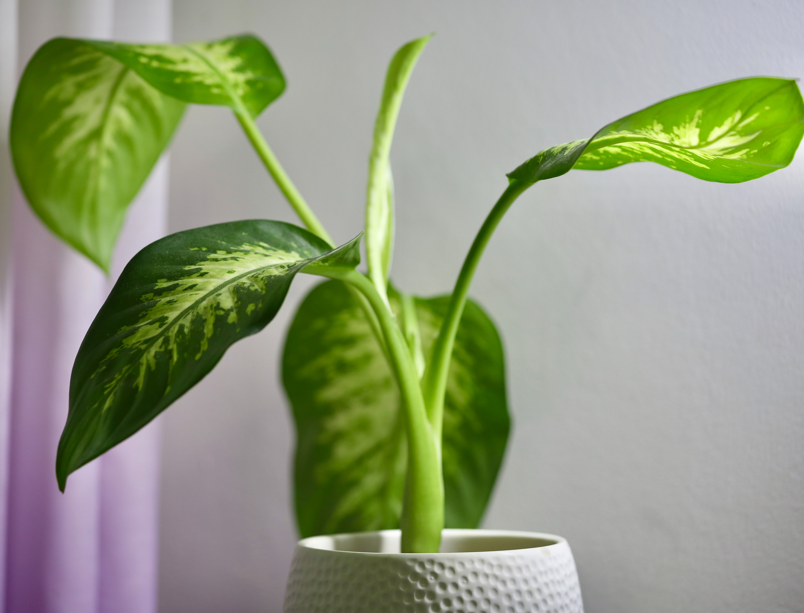

5 Super Easy Indoor Plants For Totally Beginners

July 18, 2022
Houseplants can improve the quality of indoor air, leaving rooms smelling purer and fresher. According to NASA, they effectively filter potentially harmful volatile organic compounds (VOCs) — such as benzene, formaldehyde, and xylene — from the air.
Whether you’re a first-time plant parent or someone who travels a lot, it’s possible to find low maintenance indoor plants that don’t die easily that will also work around the clock to keep the air you breathe clean. Our Plants for Beginners Collection includes easy care plants that are fun, fresh and forgiving.
When selecting a low maintenance plant, look for plants with deep green leaves since they perform best in low light and require less water. You’ll know your plant is too thirsty if it has wilting leaves or soil pulling away from the sides of the planter.
We’ve compiled a list of 7 low light plants and low maintenance houseplants that are best for brown thumbs, new plant parents or frequent travelers. And since the benefits of plants are endless, you may end up adding all seven to your home.
PEACE LILY
The peace lily with its broad, dark green leaves and charming white flowers fits in every space. Because peace lilies are one of the most efficient houseplants at filtering the air, it’s a great pick for bedrooms and office spaces. Place in bright light and water when soil is dry or leaves start to droop. (Don’t worry, they’ll spring right back up.)
PALMS
A ‘plant it and forget it’ choice because it needs very little attention. As long as you don’t overwater, this plant is indestructible. It’s a slow grower that’s perfect for just about any room of the home. Water when the top 2 inches of soil is dry to the touch.
Sansevieria (Snake Plant)
Called ‘Snake Plant’ or ‘Mother-in-Law’s Tongue,’ this houseplant has striking sword-shaped leaves that add height, greenery and simply make any interior feel happier. Extremely low-maintenance, this hardy indoor plant is adaptable to almost any growing condition including low light. Water when soil is dry to the touch.
ZZ Plant
The ZZ plant excels when ignored and will even grow in low-light conditions, such as dark corners of offices and homes. A workhorse of a houseplant, the ZZ can tolerate periods of drought, so water when top 2 inches of the soil is dry.
Aloe Vera Plant
Aloe plants love heat and sun but require little maintenance. Bonus: You can soothe a sunburn by snapping off one of the plump leaves and applying the cooling gel directly to your skin. Water when the top 2 inches of the soil is dry.
Monstera

This stylish plant has been touted as one of the easiest houseplants ever. You can find this plant in a range of shapes and sizes. Relatively slow growers, place monstera in medium or bright spots and water when the soil surface dries out.
Dieffenbachia
The variegated leaves make it more of an unusual choice for houseplants, but it is still easy to grow. It does like the temperature on the warm side, so avoid placing it near windows with cold drafts or A/C vents. Water when soil is dry.
Look what you need for
Check our plants based on what you need. We got a variety of ornamental plants just for you!
SHOP NOWRecent Posts